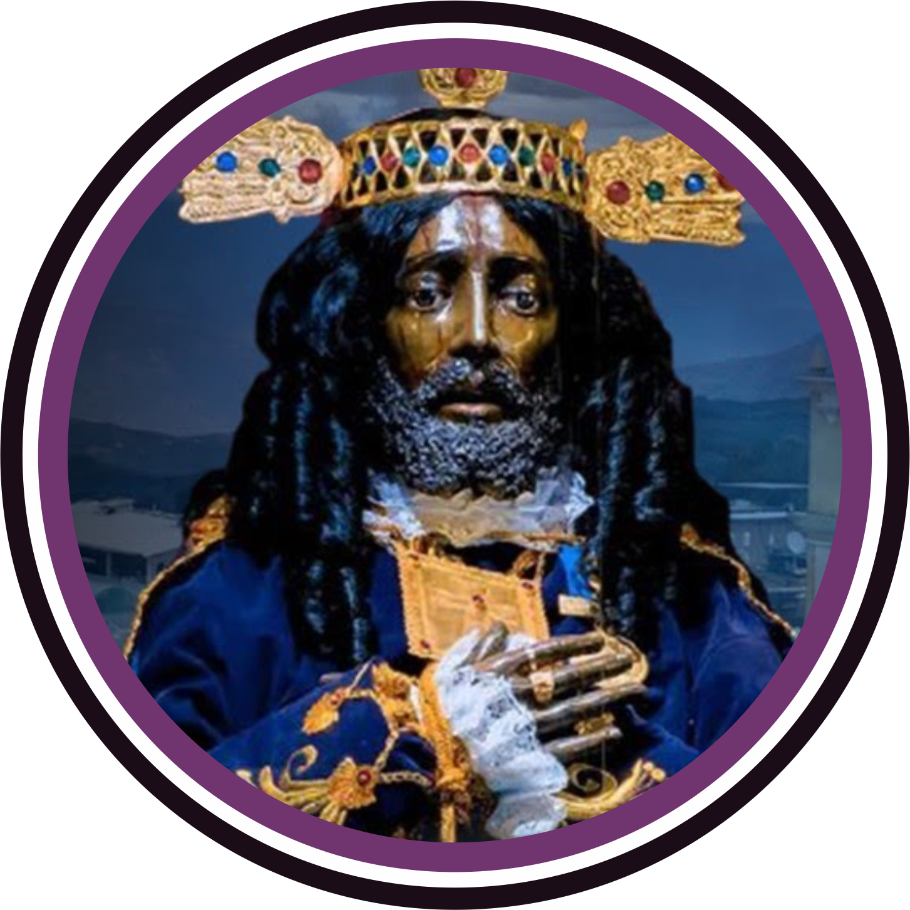

<mat-toolbar class="header-login" color="primary">
  
  <span class="header-spacer"></span>
  <!-- <button mat-raised-button color="primary">Manuales</button> -->
</mat-toolbar>

<app-login-form></app-login-form>

<footer class="footer-login ">
  <p style="color: white;">{{anio}} - &copy; Área de desarrollo</p>
</footer>
